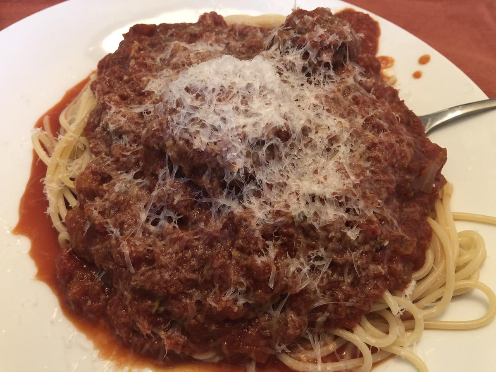

Based on https://cravingsbychrissyteigen.com/blogs/recipes/spaghetti-meatballs/
Personal rating: 4 / 5

(Optional) We have always made this with store-bought meatballs
1 cup fresh breadcrumbs (processed from 3-4 slices white bread)
1/4 cup milk
1 lb ground beef
1 lb ground pork
1 cup finely shredded Parmigiano Reggiano cheese, plus more for garnish
1 Tbsp minced garlic
1.5 tsp kosher salt
1/2 tsp chili flakes
2 eggs plus 1 egg yolk
1/4 cup fine dry breadcrumbs
1/4 cup olive oil
1 large onion, diced (3 cups)
2 Tbsp minced garlic
1/4 cup tomato paste
1 (28-oz) plus 1 (14-oz) cans crushed tomatoes
1 (28-oz) can tomato sauce
1 Tbsp dried oregano
1 tsp chili flakes
1 tsp dried thyme
1 tsp dried parsley
1 tsp dried rosemary
1 Tbsp kosher salt
2 tsp sugar
3/4 lb dried spaghetti
Finely grated Parmesan, for garnish
Fresh basil for garnish
Combine the breadcrumbs and milk in a large bowl; let the crumbs soak up all the milk. Add the beef and pork to the bowl along with the cheese, garlic, salt, chili flakes, eggs, and egg yolk. Gently mix, being careful not to overwork the meat, then form into about 18 golf ball-sized meatballs. Arrange on a large baking sheet and sprinkle very lightly on both sides with the fine dry breadcrumbs (just a super light dusting). Chill for 1 hour and up to 24 hours (this helps the meatballs keep their shape).
Heat the oil in a large skillet over medium heat, then add the meatballs (working in batches if you have to) and brown on all sides, 8 minutes total (lower temperature slightly if you need to to avoid any burning). Transfer browned meatballs to a large plate, and carefully drain all but 1/4 cup fat and oil in the skillet. Cover to keep the meatballs warm.
Heat the fat and oil left over from the meatballs over medium heat. Add the onions and cook, stirring, until softened and translucent, 10 minutes. Add the garlic and cook for 1 more minute. Add the tomato paste and cook, stirring, until caramelized and absorbed, 2 minutes. Stir in the crushed tomatoes, oregano, chili flakes, thyme, parsley, rosemary, salt, sugar, and vinegar. Bring to a boil, reduce the heat to low, and simmer until the sauce thickens, 25 to 30 minutes.
Finish and Serve:
Gently nestle the meatballs in the sauce, return to a simmer and cook until the meatballs are fully cooked through and absorb the sauce, 20-25 minutes. Season with salt and pepper to taste.
While the meatballs are simmering in the sauce, cook the pasta al dente according to package directions. Drain, then add to the pot with the meatballs and sauce, or create individual portions. Garnish with cheese and basil.